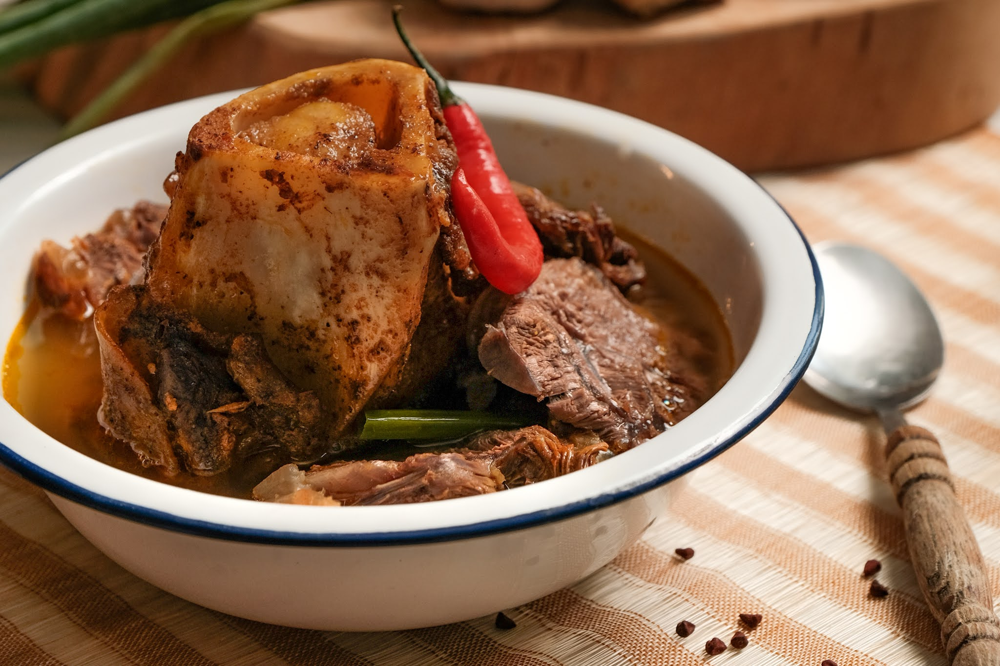
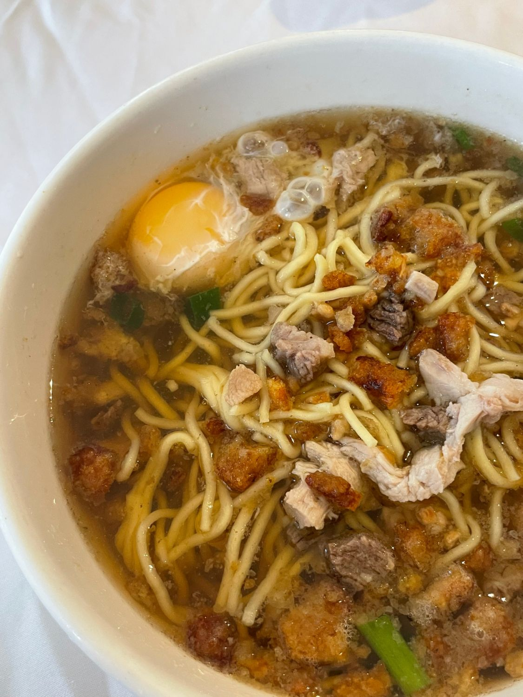
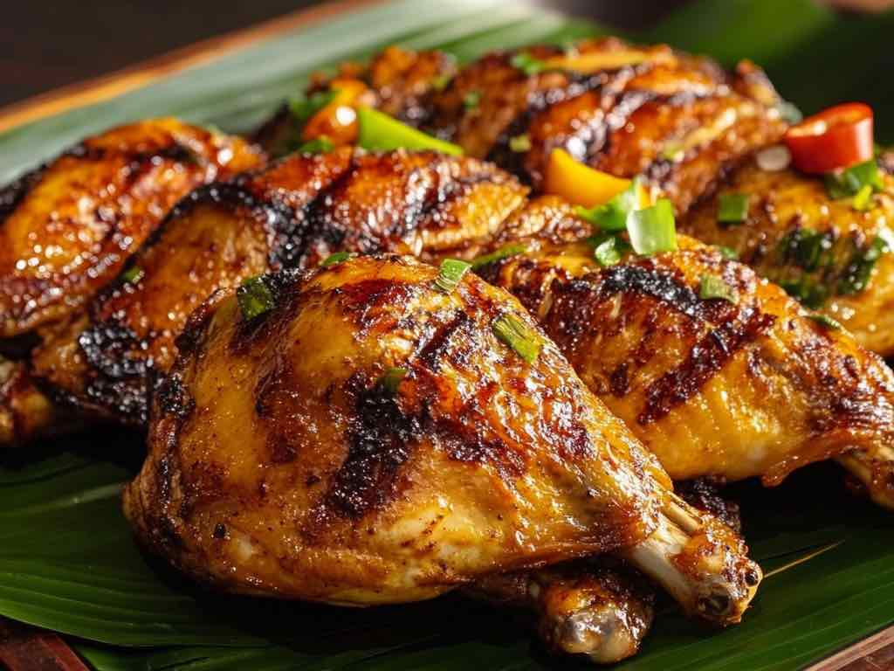
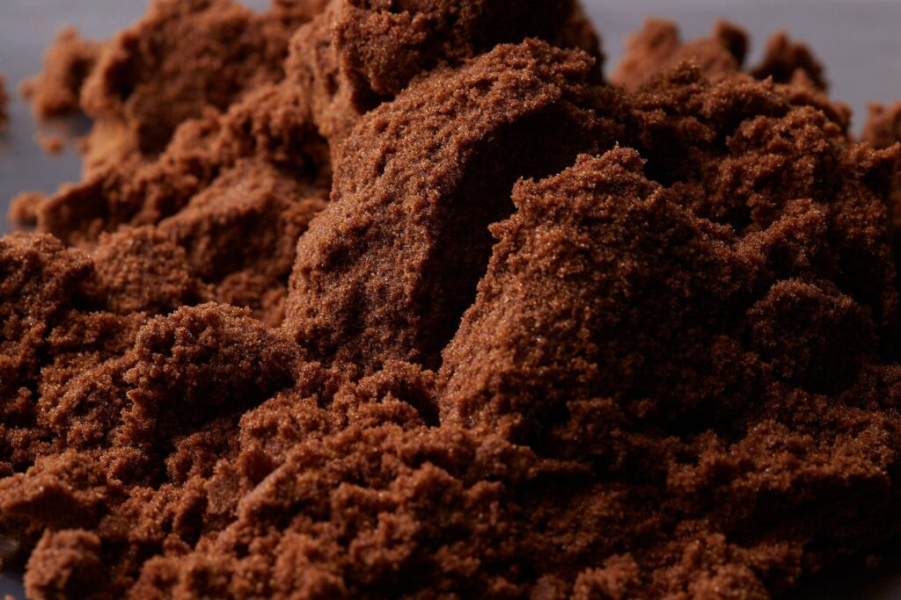
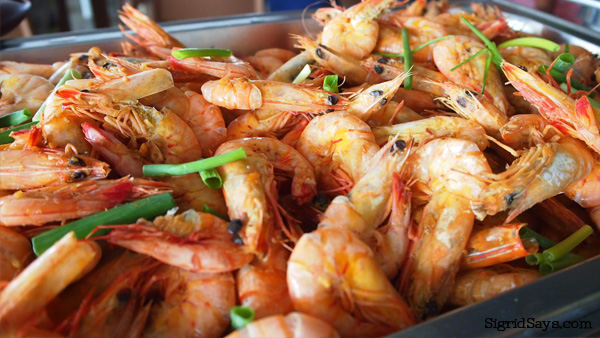
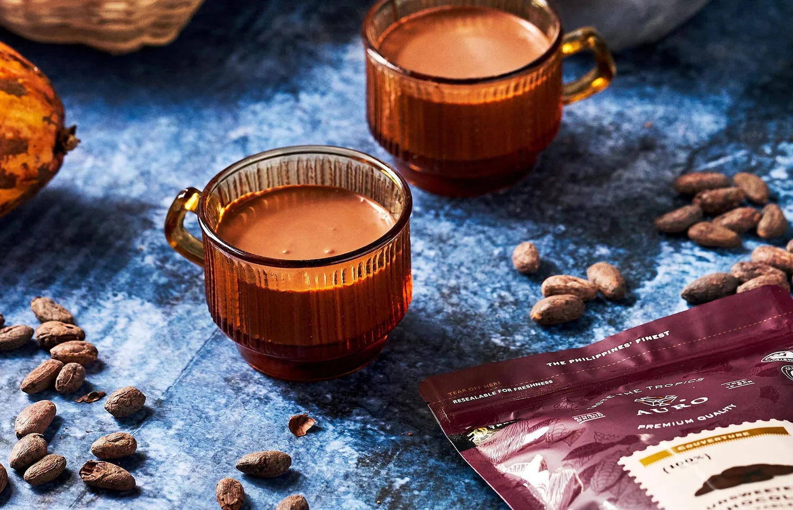

Must-Try Local Foods & Delicacies

Kansi
Kansi is Negros Occidental's signature dish — a robust sour beef soup that combines the sourness of batwan (a local sour fruit), bone-in beef cuts, and bone marrow in a rich, flavorful broth. Often compared to Manila's bulalo but elevated by its distinctive regional twist, Kansi is comfort food at its finest.
The key ingredient, batwan fruit (Garcinia binucao), gives the soup a uniquely tart and fruity flavor that sets it apart from any other Filipino beef soup. Every Negrense family has their own version, but the best bowls are found in old-school restaurants in Bacolod City.

Piaya
Piaya is Negros Occidental's most famous pasalubong (souvenir food) — a flaky, unleavened flatbread filled with muscovado sugar (unrefined brown sugar) and sesame seeds. The dough is rolled ultra-thin and griddled until golden and slightly charred, creating a delightfully chewy, sweet treat.
Modern variations now include ube (purple yam), mango, chocolate, and cheese fillings. Every visitor to Bacolod leaves with boxes of Piaya — it is the province's edible signature and an essential part of any Negrense experience.
Napoleones
Napoleones (also spelled "Napoleons") is a layered puff pastry filled with rich custard cream and topped with sweet white icing — a Negrense interpretation of the French mille-feuille. Light, flaky, and indulgently creamy, it is one of the most beloved pastries in the entire Visayas region.
Originally popularized by the Vito family of Silay City, Napoleones has become synonymous with Negros Occidental baking tradition. The best Napoleones are found fresh from bakeries in Bacolod, where they sell out daily.

Batchoy
La Paz Batchoy, originating from the La Paz district of Iloilo City but beloved throughout Negros Occidental, is a hearty noodle soup made with pork offal (liver, heart, kidney), pork rinds (chicharon), crushed garlic, green onions, and fresh egg noodles in a rich, savory broth.
Batchoy is the quintessential comfort food of the Ilonggo people. A bowl of piping hot Batchoy in Bacolod City — especially at a classic carinderia or the local food park — is a rite of passage for any visitor to Negros Occidental.
Other Must-Try Flavors

Grilled chicken marinated in annatto, citrus, lemongrass, and spices — the grilled chicken that made Bacolod the "Chicken Inasal Capital."

Unrefined, molasses-rich dark sugar unique to Negros Occidental — used in Piaya and prized globally for its complex, caramel-like flavor.

Giant fresh-water prawns from Sagay City — famed for their size, sweetness, and freshness, best grilled or cooked in butter garlic.

Rich, dark, traditional Filipino drinking chocolate made from local cacao tablets — thick, aromatic, and deeply satisfying.